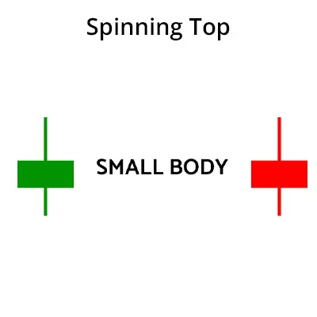

Das Spinning-Top-Muster ist ein Kerzenmuster, das auf Unsicherheit in den Aufwärts- oder
Abwärtstrends des Marktes hindeutet. Dieses Muster wird durch einen kleinen Kerzenleuchter
gebildet, dessen Körperlänge nur sehr wenig Unterschied zwischen seinen Aufwärts- und
Abwärtsöffnungspreisen aufweist.
Das Spinning-Top-Muster ist ein neutrales Muster. Wenn dieses Muster auftritt,
gibt es keine klare Anzeige für einen Aufwärts- oder Abwärtstrend auf dem Markt.
Manchmal wird das Spinning-Top-Muster mit dem "Morning Star-Muster" verwechselt.
Das Morning Star-Muster deutet auf einen Aufwärtstrend hin, während das Spinning-Top-Muster
keine klare Trendanzeige liefert.